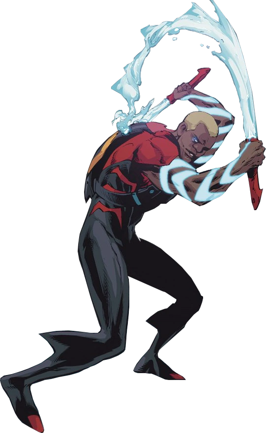

Criação do Aqualad
Aqualad é um personagem dos quadrinhos da DC Comics. Ele foi criado por Bob Haney e Nick Cardy,
fazendo sua primeira aparição em Adventure Comics #269, lançado em 1960.
O Personagem Aqualad
Aqualad é o codinome compartilhado por vários personagens ao longo da história da DC Comics.
O mais conhecido é Garth, um atlante que se torna um aliado do Aquaman. Ele é apresentado
como o ajudante e parceiro juvenil do Aquaman, compartilhando suas habilidades
e participando de suas aventuras aquáticas.
Garth possui habilidades atlantes, incluindo a capacidade de respirar debaixo d'água,
nadar em alta velocidade e se comunicar com a vida marinha. Ele também é um
habilidoso combatente aquático e tem um tridente como arma de escolha.
Quadrinhos Importantes do Aqualad
Aqualad teve várias histórias importantes nos quadrinhos, explorando sua jornada como parceiro do Aquaman e
sua evolução como herói independente. Aqui estão alguns dos quadrinhos mais relevantes do personagem:
"Aquaman: A Death in the Family" (1994):
Escrito por Peter David e ilustrado por Martin Egeland, esta história segue Aqualad enquanto ele lida com a
morte de um ente querido e enfrenta seu próprio destino como herói.
"Teen Titans" (2003-2011):
Aqualad é um membro importante dos Jovens Titãs nesta série, enfrentando ameaças e lutando ao lado de outros
jovens heróis.
Adaptações em Outras Mídias
Aqualad também apareceu em várias adaptações animadas e live-action, ganhando destaque em diferentes
projetos. Aqui estão algumas das mais notáveis:
Série animada "Young Justice" (2010-presente):
Aqualad, conhecido como Kaldur'ahm, é um dos principais membros da equipe de super-heróis adolescentes,
enfrentando missões perigosas e lidando com traição e segredos.
Série de TV "Titans" (2018-presente):
Aqualad, interpretado por Drew Van Acker, é um personagem recorrente nesta série, apresentando suas
habilidades aquáticas e suas relações com outros heróis.
Habilidades do Aqualad
Aqualad possui uma série de habilidades aquáticas e atlantes, tornando-o um combatente formidável no mundo
subaquático. Aqui estão algumas de suas principais habilidades:
Respiração Subaquática:
Aqualad pode respirar debaixo d'água, permitindo-lhe explorar o oceano sem restrições.
Natação Rápida:
Ele é capaz de nadar em altas velocidades, ultrapassando até mesmo os nadadores mais habilidosos.
Comunicação com a Vida Marinha:
Aqualad pode se comunicar telepaticamente com a vida marinha, permitindo-lhe obter informações valiosas e
solicitar ajuda quando necessário.
Força e Resistência Sobrehumanas:
Ele possui uma força e resistência sobre-humanas, permitindo-lhe enfrentar ameaças submarinas poderosas.
Conclusão
Aqualad é um personagem marcante e importante no universo da DC Comics. Como parceiro do Aquaman, ele traz
uma perspectiva jovem e habilidades aquáticas para a equipe de super-heróis. Ao longo dos quadrinhos e
adaptações, Aqualad tem sido explorado como um herói independente, enfrentando desafios pessoais e lutando
contra ameaças submarinas. Suas habilidades atlantes, incluindo a capacidade de respirar debaixo d'água,
nadar em alta velocidade e se comunicar com a vida marinha, o tornam uma força a ser reconhecida nos
oceanos. Com aparições em várias adaptações, Aqualad conquistou uma base de fãs dedicada e continua a ser
uma figura amada e influente no mundo dos super-heróis da DC.